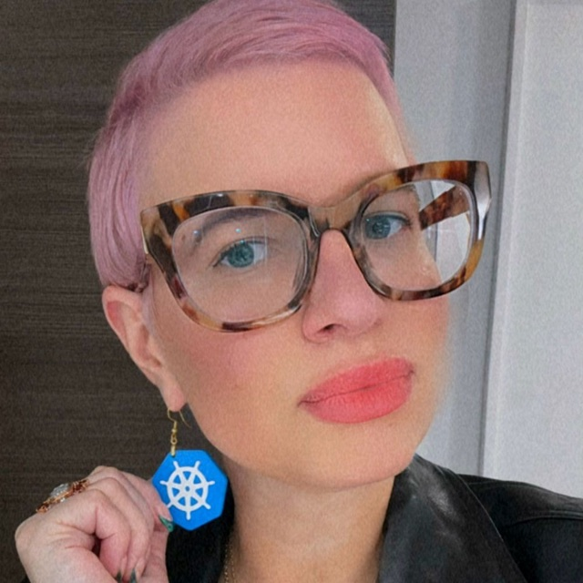

About Ashley

Welcome to my corner of the internet.
Ashley Willis
Developer advocate, open-source enthusiast, and professional internet person.
- Status
- Online
- Home
- ashleywillis.social
- Mode
- Curious

Welcome to my corner of the internet.
Developer advocate, open-source enthusiast, and professional internet person.